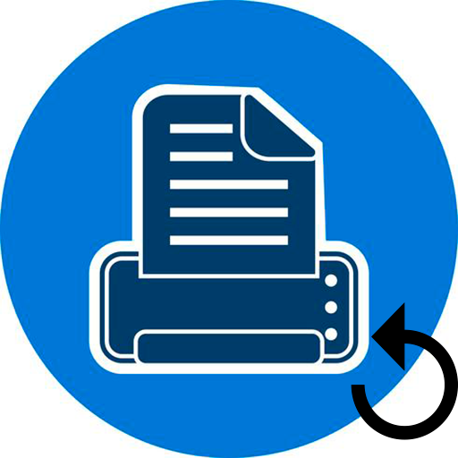
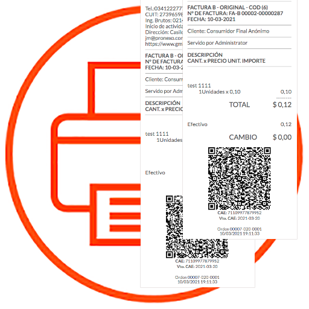
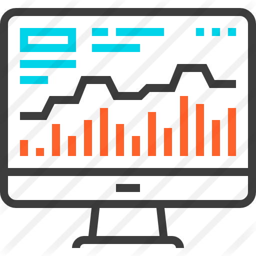

Características

Reimprimir.
Este módulo le ayudará a reimprimir el ticket / factura de POS.

POS Tickets.
Puede ver todos los Tickets realizados en el POS en la pantalla.Volver a pedir mismos productos.
Puede volver a solicitar fácilmente mismos productos que ya vendio en otro ticket.Notas de crédito.
Puede devolver fácilmente cualquier Ticket pedido desde el pos directamente o mediante código de barras.
Cargos por bolsa.
Con este módulo puede agregar cargos por bolsa.Cupones /vouchers de regalo.
Puede aplicar un vale de regalo al pedido de POS.Importación Presupuesto Venta.
Con este módulo puede importar fácilmente cualquier presupuesto en POS.Crear presupuesto.
Con este módulo puede crear un presupuesto desde POS.Descuentos Fijos.
Con este módulo, puede aplicar un descuento fijo al pedido de POS.
Recuento de elementos.
Con este módulo puede ver la cantidad de artículos del pedido de POS.Cantidad de STOCK del producto.
Usando este módulo puede ver la cantidad de stock de todos los productos en POS.

Filtrar pedidos.
Con este módulo, puede filtrar los pedidos de POS según el cliente.
Configuración para crear nota de crédito.
El usuario puede configurar para crear una nota de crédito para el pedido.